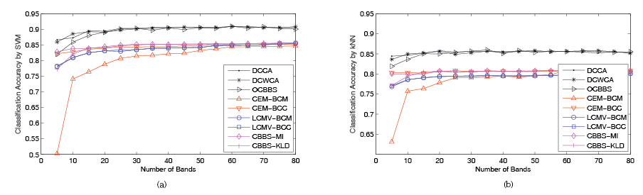
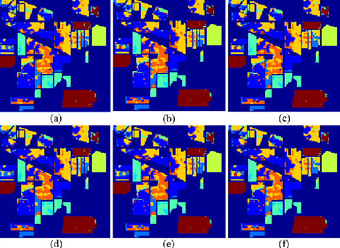
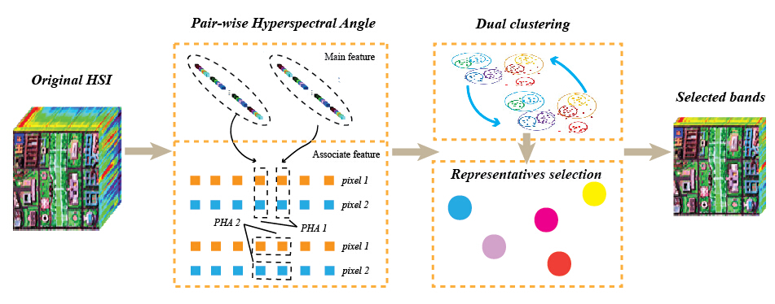
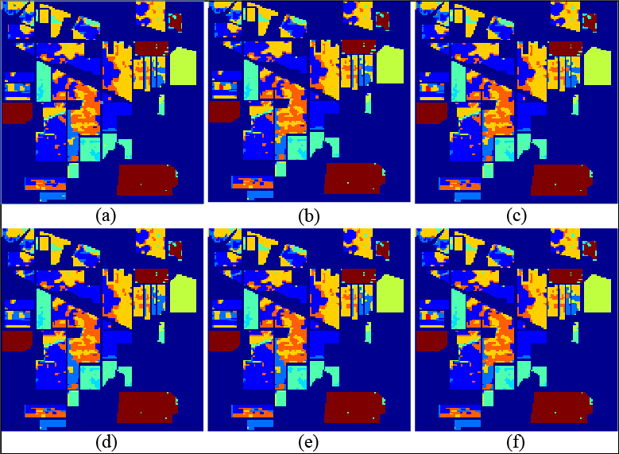

News
| • 09/2016- | I'll be a PHD candidate in the Biomedical and Multimedia Signal Processing research group, Electrical and Computer Engineering Department, University of British Columbia under the supervision of Prof. Z. Jane Wang. |
| • 2016-02-23 | I am invited as the reviewer for the International Conference on Image and Signal Processing 2016 (ICISP 2016) |
| • 2016-02-17 | I am invited as the reviewer for IEEE Transaction on Cybernetics (IEEE) |
| • 2015-09-28 | One paper “Hyperspectral Image Classification via Multi-Task Joint Sparse Representation and Stepwise MRF Optimization” is newly accepted by IEEE Transaction on Cybernetics (IEEE) |
| • 2015-09-17 | One paper "Dual Clustering Based Hyperspectral Band Selection by Contextual Analysis" is newly accepted by IEEE Transaction on Geoscience and Remote Sensing (IEEE) |
| • 2015-09-03 | One paper "Salient Band Selection for Hyperspectral Image Classification via Manifold Ranking" is newly accepted by IEEE Transaction on Neural Networks and Learning Systems (IEEE) |
Education
| • 09/2013-07/2016 | M.S., Computer Science, University of Chinese Academy of Sciences; Supervisor: Prof. Yuan Yuan, Xuelong Li and Qi Wang |
| • 09/2009-07/2013 | B.S., Optoelectronic Information Engineering, Huazhong University of Science and Technology; B.A., English (minor), Huazhong University of Science and Technology |
Research Interests
Computer vision, pattern recognition, machine learning methods and their applications particularly in:
| • | Hyperspectral/multispectral image analysis, including classification, segmentation, band selection, abnormal detection, etc. |
Publications
- Y. Yuan(supervisor), J. Lin, and Q. Wang, "Dual Clustering Based Hyperspectral Band Selection by Contextual Analysis," IEEE Transactions on Geoscience and Remote Sensing (IEEE), vol. 54, no. 3, pp. 1431-1445, 2016.(SCI, IF:3.514)
- Q. Wang(supervisor), J. Lin, and Y. Yuan, "Salient Band Selection for Hyperspectral Image Classification via Manifold Ranking," IEEE Transactions on Neural Networks and Learning Systems (IEEE), DOI: 10.1109/TNNLS.2015.2477537, 2016.(SCI, IF：4.291)
- Y. Yuan(supervisor), J. Lin, and Q. Wang, “Hyperspectral Image Classification via Multi-Task Joint Sparse Representation and Stepwise MRF Optimization,” IEEE Transactions on Cybernetics (IEEE), DOI: 10.1109/TCYB.2015.2484324, 2015.(SCI, IF:3.469)
- J. Lin, Q. Wang, and Y. Yuan, “In Defense of Iterated Conditional Mode for Hyperspectral Image Classification,” IEEE International Conference on Multimedia and Expo (IEEE), pp. 1-6, 2014.(EI, accept rate=29.7%) [PDF]
[↑TOP]
Patents
- Y. Yuan, Q. Wang, and J. Lin, “Dual Clustering Based Hyperspectral Image Band Selection via Neighborhood System Analysis,” 201510072842.2, 2015.
[↑TOP]
Highlighted Projects
|  | Theory and Application for Precision Processing and Intelligent Spatial Information Transformation of High Resolution Remote Sensing Satellite Data Key Project of Chinese National Programs for Fundamental Research and Development, Team leader. |
|  | In defense of Iterated Conditional Modes method Mainly focus on the Markov Random Fields related paradigm, which involves a demanding energy minimization procedure. |
|  | Dual Clustering Based Hyperspectral Band Selection by Contextual Analysis |
 |
Band selection by mainfold ranking |
|  | Hyperspectral Image Classification via Multi-Task Joint Sparse Representation and Stepwise MRF Optimization |
Honors and Certificates
| • 2013 | Individual Scholarship |
| • 2012 | National Computer Rank Examination (certificate of level 4): Network Engineering |
| • 2011 | National Computer Rank Examination (certificate of level 3): Software Engineering |
| • 2009 | Individual Scholarship |
[↑TOP]
Membership
• IEEE Student Member
Regular Reviewer：
• the European Conference on Computer Vision 2016 (ECCV 2016)
• the European Signal Processing Conference 2016 (Eusipco 2016)
• the Pacific Rim International Conferences on Artificial Intelligence 2016 (PRICAI 2016)
• the International Conference on Image and Signal Processing 2016 (ICISP 2016)
• the International Conference on Swarm Intelligence (ICSI 2016)
• the British Machine Vision Conference (BMVC) 2015 (BMVC 2015)
• Neurocomputing (Elsevier)
• Pattern Recognition (Elsevier)
• IEEE Transactions on Cybernetics (IEEE)
• Big Data Analytics (Bio-Med Central / Springer)
[↑TOP]
Skills and Student Titles
• Program: Proficient in Matlab, AI, LaTex, grasp C/C++, PS, OpenGL, github, HTML5
• Monitor of grade 2013
[↑TOP]